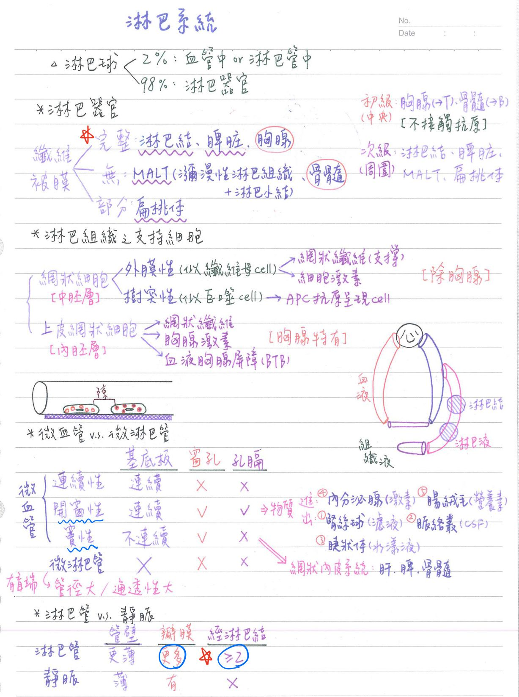
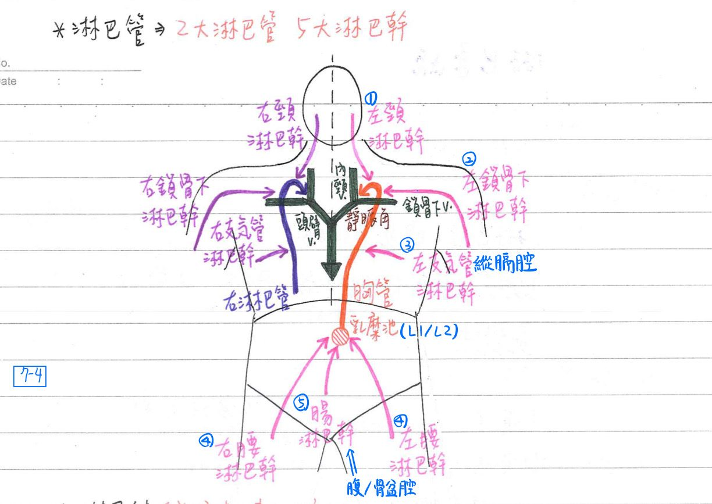
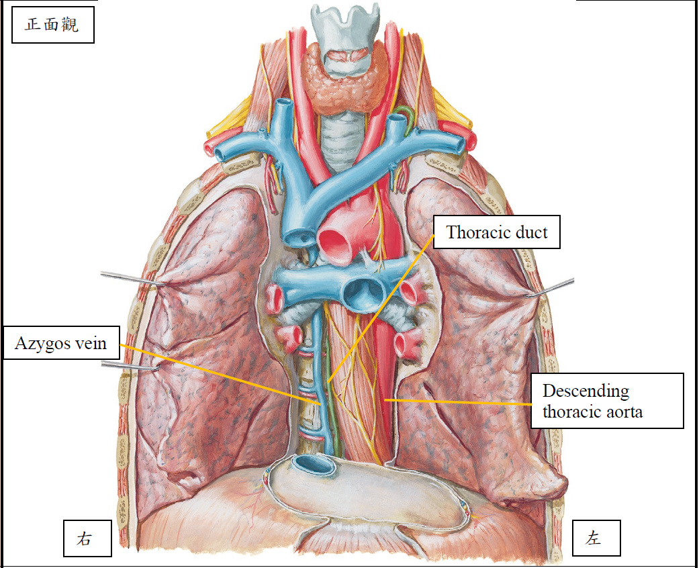
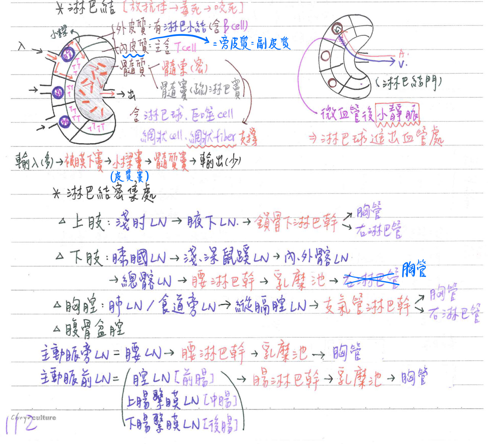
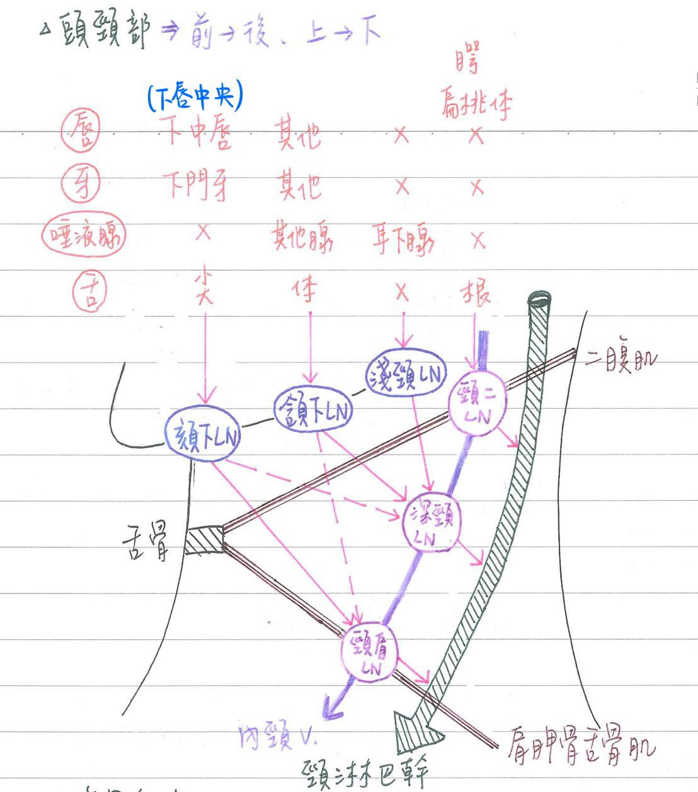
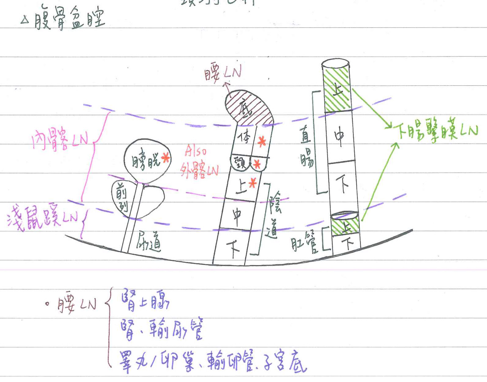
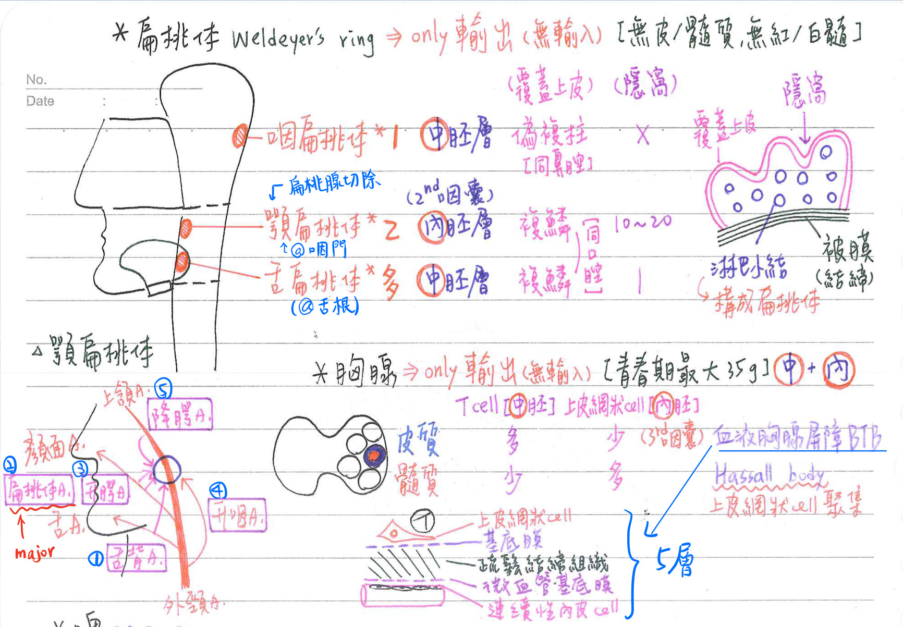
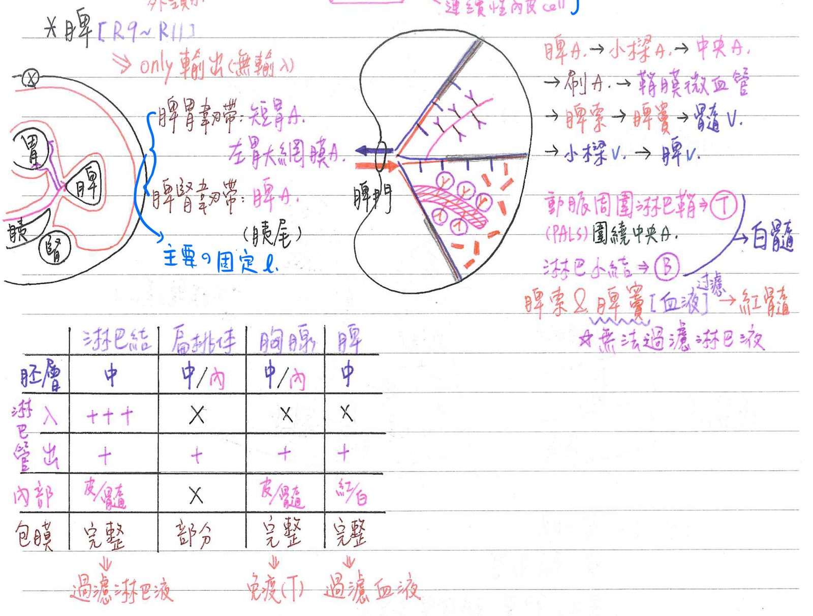

💦 淋巴系統
淋巴系統-組織與功能
淋巴系統-主要細胞
- 淋巴球(lymphocytes)：
- 散佈(佔2%)於：
- 血管中(血液)
- 淋巴管中(淋巴液)
- 聚集(佔98%)於：淋巴器官
- 散佈(佔2%)於：
淋巴系統-淋巴器官
- 依纖維被膜(fibrous capsule)分類：
- [重點]具完整纖維被膜：★淋巴結(lymphnode)、脾臓(spleen)、胸腺(thymus)
- 完全無纖維被膜：
- 瀰漫性林巴组織(diffuse lymphatie tissue)：
- 沒固定型態；和周邊組織無明顯界線；通常含大量plasma cell
- 分布於消化道、呼吸道、泌尿道之黏膜(固有)層
- 淋巴小結/淋巴濾泡(lymphatic nodule/follicle)：邊界明顯但不具鞘膜；分佈於
- 闌尾(appendix)及盲腸(cecum)
- 迴腸(ileum)：培氏斑塊(Peyer patch)[位於黏膜(固有)層&黏膜下層]
- 扁桃腺/體
備註
2020 FC p. 72
- 脾
備註
2020 FC p. 72
- 黏膜相關淋巴組織(mucosa-associated lymphoid tissue, MALT)
=彌漫性淋巴組織+淋巴小結
- 骨髓
- 瀰漫性林巴组織(diffuse lymphatie tissue)：
- 具部份纖维被膜：扁桃體(tonsils)←內有淋巴小節聚集
- 依性質分類：
- 中央(central)=初級(primary)淋巴器官：
- 胸腺(教育T)&骨髓(教育B)
- 不與抗原接觸。
- 周圍(peripheral)=次級(secondary)淋巴器官：
- 淋巴結、脾臓、扁桃腺、黏膜相關淋巴組織等
- 與抗原接觸後，淋巴球活化後增殖，執行漿液性免疫(產生抗體)或細胞性免疫
- 中央(central)=初級(primary)淋巴器官：
淋巴系統-功能
- 免疫及吞噬作用：防禦
- 幫助回收組織液，防止水腫
- 幫助脂肪等物質的運送
- 組織液中較大分子主要經由淋巴系統回到血液循環

[重點]淋巴系統之支持細胞
💡
此處的網狀細胞(reticular cell)和RBC前身的網狀細胞(reticulocyte)不一樣歐，但一樣來自中胚層
網狀纖維(type 3 collagen構成)主要分布於：平滑肌、神經內膜、肌內膜、網狀內皮系統(肝臟、脾臟、骨髓、淋巴結)
- 網狀細胞(reticular cell)：源自中胚層；除了胸腺以外的淋巴組織
- 外膜性細胞(adventitial cell)：似纖維母細胞(fibroblast-like)
- 產生★★網狀纖維(reticular fiber)→提供淋巴組織之支撐
- 產生細胞激素(如colony-stimulating factor, CSF)→促進血球分化生長
- 樹突性細胞(dendritic cell)：似巨噬細胞(macrophage-like)
- 作為抗原呈現細胞(antigen resentng cel=APC)，以活化免疫系統
- 外膜性細胞(adventitial cell)：似纖維母細胞(fibroblast-like)
- 上皮網狀細胞(epithelial reticular cell)：源自內胚層；胸腺特有；源自第3咽囊
- 產生網狀纖維(reticular fiber)→提供胸腺之支撑(support)
- 產生胸腺激素(thymosin)→促進T細胞之分化成熟
- 形成血液胸腺屏障(blood-thymus barier, BTB)→分隔血液 & T細胞
- 胸腺小體(Hassal’s bodys；thymic corpuscle)：type 6上皮網狀細胞圍繞而成
備註
2022 FC組織學 p.77
[補充]網狀內皮系統(RES)
- =組織巨噬細胞系統(tissue macrophage system)
=單核吞噬系統(mononuclear phagocyte system, MPS) - 構造：網狀纖維+內皮細胞+巨噬細胞
- 位置：骨髓、肝臟(肝竇)、脾臟(紅髓)、淋巴結(淋巴竇)
- 功能：吞噬作用
淋巴管
微淋巴管(lymphatic capillaries)
- ★[109-2]微淋巴管與微血管均為單層結構(僅具內膜)
- 內皮細胞：無窗孔(fenestration)，彼此間無緊密結合，具明顯細胞間隙(感染時病原體由此進入循環)
- 無基底膜(basal lamina)
- 孔膈/隔膜：比脂雙層(單位膜)還薄的一層膜
| 盲端 | 管徑 | 通透性 | 基底膜 | 內皮間隙 | 窗孔 | 孔膈/隔膜 | 例子 | |
|---|---|---|---|---|---|---|---|---|
| 微淋巴管 | ★[109-2]+ | 比微血管大 | ★[109-2]比微血管大 | ★[109-2]X | 大 | 0 | 0 | |
| 連續型微血管 (continuous) | 0 | 小 | 小 | 連續 | 小 | 0 | 0 | others |
| 開窗型微血管 (fenestrated) | 0 | 中 | 中 | 連續 | 中 | + | + | 供物質進出： 腎絲球(沒有孔膈)、腸絨毛、膽囊、 脈絡叢(CSF)、睫狀體(水樣液)、內分泌腺 |
| 竇型微血管 (sinusoid) | 0 | 大 | 大 | 不連續 | 大 | + | 0 | 網狀內皮系統：肝、脾、骨髓 |
淋巴管(lymphatic vessel)
- 淋巴管與靜脈均具3層結構：內膜、中膜、外膜
管壁 瓣膜 經淋巴結 淋巴管 更薄 更多 + 靜脈 薄 有 0 💡組織液回收：90%經由微血管；10%經由淋巴管
- 胸管(thoracic duct)：
- 為全身最大之淋巴管
- 下方起自★[110-1]乳糜池(cisterna chili=chyle cisem；位於L1/ L2)
→上方★注入左靜脈角(左內頸V & 左鎖骨下V匯集處) - 引流横膈膜以下全部&横膈膜以上左半側之淋巴液(佔全身3/4)：引流人體的5大淋巴幹
- 左頸淋巴幹(jugular trunk)：頭頸部
- 左鎖骨下淋巴幹(subclavian trunk)：上肢
- 左支氣管縱膈腔淋巴幹(bronchomediastinal trunk)：胸腔
- ★左、右腰淋巴幹(lumbar trunk)：雙下肢 (注入乳糜池)
- ★腸淋巴幹(intestinal trunk)：腹骨盆腔 (注入乳糜池)
- 胸管路徑：
- 始位於腹主動脈之右側，★★經主動脈裂孔(aortichiatus)穿越橫隔進入後縱膈腔
- 由約中線偏右向上行(★胸主A位於其左/奇V位於其右)，於T4/T5處向左上行進入上縱膈腔
- 行於約中線偏左(位於食道之左後方)
- 抵C7處經頸動脈鞘之後方折返注入左靜脈角
- 右淋巴管(right lymphatic/thoracic duct)：
- 為全身第二大之淋巴管
- 注入右靜脈角(右內頸V&右鎖骨下V匯集處)
- 引流橫膜以上右半側之淋巴液(佔全身1/4)：
- 右頸淋巴幹：頭頸部
- 右鎖骨下淋巴幹：上肢
- 右支氣管縱膈腔淋巴幹：胸腔
- 中樞神經(腦及脊髓)、軟骨、骨質、上皮細胞、眼球等不含淋巴管


淋巴結(lymph node)
淋巴結(腺)之結構
- ★皮質(cortex)：位於外部
- 外皮質：具淋巴小結(主含B細胞)
- 淋巴小結(lymphatic nodule)
- 初級(休息態)：體積較小
- 次級(活化態)：被抗原刺激後)，體積較大→又稱為生發中心(germinal center)
- 淋巴小結(lymphatic nodule)
- 內皮質：又稱旁皮質=副皮質(paracortex)，主含T細胞
- 含★微血管後小靜脈(postcapillary venule)：為淋巴球進出血管處
- 外皮質：具淋巴小結(主含B細胞)
- ★髓質(medulla)：位於內部
- 髓索(medullary cord)：主含淋巴球
- 髓質竇(medullary sinus)：★淋巴竇(lymphatic sinus)
- 髓索及淋巴竇：均含淋巴球、巨噬細胞、網狀細胞及網狀纖維
- 淋巴結內部支撑：網狀纖維(reticular fiber)
- 被膜(capsule)：
- 最外層包有結締組織被膜
- 往內延伸為小樑(trabeculla)
淋巴結-淋巴液流程：★同時具有輸入淋巴管及輸出淋巴管
💡
輸入：輸出=10：1(大約)
💡
[重點]每條淋巴管回流到靜脈前，必經≥2個淋巴結
- 多條輸入淋巴管(afferent lymphatic vessel)[★位於淋巴結之凸面]
→被膜下竇(subcapsular sins)
→小樑竇(trabecular sins)=皮質竇(cortical sius)
→髓質寶(medullary sinus)
→少條輸出淋巴管(efferent lymphatic essel)[位於淋巴結之凹面]

淋巴結門(hilum)：位於淋巴結之凹面
- 輸出淋巴管
- 營養動脈
- 營養靜脈
- 位於★旁皮質之微血管後小靜脈(postcapillary venule)：為淋巴球進出血管處
淋巴結-功能
- 過濾淋巴液：
- 巨噬細胞：吞噬作用
- 淋巴球：執行漿液性免疫(產生抗體)或細胞性免疫
淋巴結密集處 <review>每條淋巴管回流到靜脈前，必經≥2個淋巴結
- 頭頸部：
- 淋巴引流通則：由前向後、由上向下
- [3個]頦下淋巴結(submental LN)or頷下淋巴結(submandibular LN)or淺頸淋巴結(superficial cervical LN)
→[3個]頸靜脈肩胛舌骨淋巴結(jugulo-omohyoid LN)or 頸靜脈二腹淋巴結(jugulo-digastric LN)or深頸淋巴結(deep cervical LN)
→頸淋巴幹(jugular trunk)
→左：胸管；右：右淋巴管
- [3個]頦下淋巴結(submental LN)or頷下淋巴結(submandibular LN)or淺頸淋巴結(superficial cervical LN)
- 主要淋巴結之引流區域：
- 頦下林巴結：引流下唇中央、舌尖、口腔底
- 頷下淋巴結：引流下唇兩側、上唇、牙齦、臉頰、舌體
- 淋巴引流通則：由前向後、由上向下
- 上肢：
- 淺肘淋巴結(cubital LN)、滑車上淋巴結(supratrochlear LN)
→腋下淋巴結(axillary LN)
→鎖骨下淋巴幹(subclavian trunk)
→左：胸管；右：右淋巴管
- 淺肘淋巴結(cubital LN)、滑車上淋巴結(supratrochlear LN)
- 下肢：
- 膝膕淋巴結(popliteal LN)
→淺、深鼠蹊淋巴結(inguinal LN)
→内、外髂淋巴結(iliac LN)→總骼淋巴結
→腰淋巴幹(lumbar trunk)→乳糜池→胸管
- 膝膕淋巴結(popliteal LN)
- 胸腔：
- 胸壁淺層、壁層肋膜→★[106-1]腋下淋巴結
- 肋膜深層、胸腔內側：肺淋巴結、食道旁淋巴結等
→縱膈腔淋巴結
→★[108-2]支氣管縱膈腔淋巴幹(bronchomediastinal trunk)
→左：胸管；右：右淋巴管
- 腹骨盆腔：
- 淋巴引流通則：
- 腰淋巴結(lumbar LN)=主動脈旁淋巴結(lateral aortic LN)
→腰淋巴幹(lumbar trunk)→乳糜池→胸管 - 主動脈前淋巴結(pre-aortic LN)=
- 腔淋巴結(celiac)
上腸繫膜淋巴結(sup. mesenteric)
下腸繫膜淋巴結(inf. mesenteric)
→腸淋巴幹(intestinal trunk)→乳糜池→胸管
- 腔淋巴結(celiac)
- 腰淋巴結(lumbar LN)=主動脈旁淋巴結(lateral aortic LN)
- [重點]主要淋巴結之引流區域(和動脈對照著看)
- 腰淋巴結(↔腹主A)：引流腎上腺、腎、輸尿管、睪丸/卵巢、輸卵管、子宮底
- ★[108-1]腔淋巴結：引流胃、肝、膽、胰、脾(前腸)
- ★[108-1]上腸繫膜淋巴結：引流小腸+大腸前半(中腸)
- 下腸繁膜淋巴結：引流大腸後半+★肛管上半(後腸)
- epicolic LN→paracolic LN→intermediate(eg. left colic) LN→上/下腸繫膜淋巴結
- 內髂淋巴結：引流前列腺、子宫體/子宫頸、陰道上2/3
- 外髂淋巴結：引流膀胱、子宫體/子宮頸、陰道上1/3
- 淺鼠蹊淋巴结：引流肛管下1/3、陰道下1/3、尿道、會陰、臀部、前腹壁下方、[少數子宫底子宮體(沿子宮圓韌帶)]
- 淋巴引流通則：


特定部位之淋巴引流
- 舌：
- 舌尖：頦下LN→頸靜脈肩胛舌骨LN
- 舌體：頷下LN→深頸LN
- 舌根：頸靜脈二腹LN
- 唾液腺：
- 耳下腺(腮腺)：淺頸N→深頸LN
- 頷下腺、舌下腺：頷下LN→頸靜脈肩胛舌骨LN
- 腭、扁桃腺：頸静脈二腹LN
- 牙齒、牙齦：
- 下門牙、下嘴唇→★頦下LN→深頸LN
- 其他=>頷下LN=>深頸LN
- 子宮：
- 子宮底：腰LN
- 子宮體、子宫頸：內髂LN & 外髂LN
- 少數子宮底/子宮體(沿子宮圓韌帶)：淺鼠蹊LN
- 陰道：
- 陰道上1/3：内髂LN & 外髂LN
- 陰道中1/3：內骼LN
- 陰道下1/3：淺鼠蹊LN
- 前列腺：內髂LN
- 膀胱：內骼LN & 外髂LN
- 尿道：淺鼠蹊LN
- 直腸上1/3：★[106-1]下腸繫膜LN；直腸下2/3：內髂LN
- 肛管上半：下腸繫膜LN；肛管下半：淺鼠蹊LN
- 陰莖/陰蒂、陰囊/大陰唇：★★淺鼠蹊LN
- 龜頭/陰蒂頭、小陰唇：深鼠蹊LN&外髂LN
- 乳房：
- 乳房外側：★腋下LN
- 乳房內側：內乳LN(=★★★胸骨旁LN)
- 乳房上方：★鎖骨下LN&鎖骨上LN
- 腹壁淋巴引流：
- 淺層：
- 臍上：★腋下LN
- 臍下：★淺鼠蹊LN
- 深層：內乳(胸骨旁)淋巴結、腰淋巴結、外髂淋巴結、★深鼠蹊LN
- 淺層：
扁桃體(tonsils)
扁桃體種類
| 數量 | 位置 | 胚胎起源 | 備註 | 覆蓋上皮 | [重點]隱窩(crypt) | |
|---|---|---|---|---|---|---|
| 咽扁桃體 (pharyngeal tonsil) | 1 | 鼻咽後壁 | 中胚層 | 有腺增殖體(adenoid)之稱 | 偽複層柱狀上皮 | 0 (平的) |
| 腭扁桃體 (palatine tonsils) | 2 | 口咽之咽門；腭舌弓(前柱) &腭咽弓(後柱)之間 | 內胚層 (2nd咽囊) | 扁桃腺切除術(tonsil lectomy) 是切這個 | 複層鱗狀上皮 | 10~20 |
| 舌扁桃體 (lingual tonsils) | 多個 | 口咽之舌基部(舌根) | 中胚層 | 複層鳞狀上皮 | 1 |
- ★[109-1]★[109-2]★[110-2]腭扁桃體-支配動脈：1主要+4次要
- 舌背A←舌A
- 扁桃體A[主要]、升腭A←顏面A
- 升咽A←外頸A
- 降腭A←上頷A
扁桃體-構造
- 由淋巴小結構成，外表面部份由上皮組織、部份由纖維被膜覆蓋
- [重點]無輸入淋巴管；僅有輸出淋巴管→(輸入：來自流入淋巴結的血管)
- 無皮質/髓質，亦無紅髓/白髓之分

胸腺(thymus)
胸腺-一般性質&胚胎來源
- ★★位於上縱膈腔
- 相對大小：二歲時最大；絕對大小：青春期最大
- 出生時=15g；青春期=35g；25歲=25g；70歲=5g
- 青春期以後逐漸退化萎縮
- 胚胎來源：
- 中胚層：T細胞(T-lymphocyte) <cf>血球是結締組織，from中胚層
- 內胚層：上皮網狀細胞(epithelial reticular cell)(源自3rd咽囊)
胸腺-功能
- 免疫：教育T淋巴球(self restrictive & self tolerance)
- 製造胸腺激素(thymosin)：促進T淋巴球之分化
胸腺-構造
- 由兩葉(lobe)構成，每葉分成很多小葉(lobule)
- 每小葉具：
- 皮質(cortex)：位於小葉外部
- 富含淋巴球&少量上皮網狀細胞
- 胸腺不含B淋巴球，亦★★★不具淋巴小結
- ★血液胸腺障蔽(blood-thymus barrier, BTB)：分隔血液&T細胞[共5層]
- ★連續性/無窗型內皮細胞
- 微血管基底膜
- 血管周圍疏鬆結締組織(含巨噬細胞)
- 上皮網狀細胞基底膜
- ★上皮網狀細胞
- 富含淋巴球&少量上皮網狀細胞
- 髓質(medulla)：位於小葉內部
- 哈氏小體(Hassall body)=胸腺小體(thymic corpuscle)：胸腺特徴
- 為同心圓排列之type 6★上皮網狀細胞聚集；中央具角化
- 富含上皮網狀細胞 & 少量T淋巴球
- 哈氏小體(Hassall body)=胸腺小體(thymic corpuscle)：胸腺特徴
- 最外層：包有結締組織被膜(capsule)，往內延伸為小樑
- 無輸入淋巴管，★僅有輸出淋巴管💡
扁桃體、胸腺、脾臟：都僅有輸出淋巴管
<cf>只有淋巴結有進有出
- 皮質(cortex)：位於小葉外部
脾(spleen=lien)
- 一般性質：
- 位於左季肋部(左上腹)；R9~R11(or R9-R10)
- 重約125g(脾臓為體內最大的淋巴器官)[重量約等於腎]
- 為腹膜包圍(脾臓屬腹膜內器官)
[重點]脾臓的固定韌帶
- 主要韌帶：
- 脾腎韌帶：內含脾A/V、★胰尾
- ★胃脾韌帶(gastrosplenic l.)：內含短胃A/V、左胃網膜A/V(皆為脾A.分支)
- 脾腎韌帶、胃脾韌帶為大網膜之一部份(腹膜之特化)
- 次要韌帶：
- 脾結腸(結腸左彎曲)韌帶
- 脾橫膈膜韌帶
脾臓-構造
- ★紅髓(red pulp)：約佔80%
- 脾索(Billroth cord)：含淋巴球、巨噬細胞、網狀細胞及網狀纖維
- 脾竇(splenic venous sinusoid)：由★桿狀内皮細胞構成
- 構成脾竇之内皮細胞形狀較長，呈桿狀(rod-shaped)且彼此不連續
- ★白髓(white pulp)：
- 中央：[重點]動脈周圍淋巴鞘(periarterial lymphatic sheath, PALS)
- ★富含T淋巴球
- 圍繞著★★中央動脈(cetral a)
- 周圍：★淋巴小結(lymphnodule)，富含★B淋巴球
→被刺激後形成生發中心(germinal center)- 此淋巴小結又稱脾小結(splenic nodule=Malpighian corpuscle)
- 中央：[重點]動脈周圍淋巴鞘(periarterial lymphatic sheath, PALS)
- 脾門(hilum)：位於內側面
- 脾A
- 脾V
- 輸出淋巴管
- 無輸入淋巴管，亦★無淋巴竇(無法過濾淋巴液)，僅具輸出淋巴管

脾臓-血液循環
- 脾動脈(splenic artery)
- →小樑A(trabecular artery)
- →中央A(central artery)
- →刷A(penicillar arteriole)：像牙刷一樣的分支
- →鞘膜微血管(sheathed capillary)
- 鞘膜微血管=動脈性微血管；有巨噬細胞(meerophage)包圍
- →紅髓脾索(splenic cord)：開放性循環(open circulation)
- 不一定會流過脾索；也有可能直接流入脾竇
- →脾竇(splenic sinusoid)
- →髓V(pulp vein)
- →小樑V(trabecular vein)
- →脾靜脈(splenic vein)
脾臓-功能
- ★過濾血液
- 巨噬細胞：吞噬作用
- 淋巴球：執行漿液性免疫(產生抗體)、細胞性免疫
- 破壞年老或破損之紅血球及血小板(血球破壞的主要場所)
- 回收紅血球之血紅素所含之鐵
- 儲存部份血液
- 出血：交感神經興奮→脾收縮→自我輸血(約125c.c.)
- 造血(胚胎時期；約胎齡9~28週)
📖 書本補充：與筆記不同或筆記沒寫到的地方
⚠️
以下為對照書本後整理，筆記原文未更動。標「筆記 vs 書」的是兩邊寫法不同、建議回頭確認的地方。
主要的淋巴器官比較表（p.78）
| 結構 | 胸腺 | 淋巴結 | 脾臟 |
|---|---|---|---|
| 竇 | 無 | 被囊下、小樑、髓質 | 脾竇 |
| 傳入淋巴管 | 無 | 有 | 無 |
| 淋巴小結 | 無 | 有，具生殖中心 | 有（白髓） |
| 實質 | 皮質和髓質 | 皮質和髓質 | 白髓和紅髓 |
| 微血管後小靜脈 | 類似高內皮小靜脈（HEV） | 高內皮小靜脈讓血液中的淋巴球進入皮質 | 無 |
| 支持細胞 | 上皮網狀細胞 | 網狀細胞 | 網狀細胞 |
| 網狀纖維 | 無 | 有 | 有 |
| 抗原呈現細胞 | 上皮網狀細胞 | 樹突細胞 | 樹突細胞 |
| 巨噬細胞 | 皮質：吞噬不當的 T 細胞；在血胸腺障壁處移除由血管逃出的抗原 | 在竇內及周圍，伸長突起偵測淋巴液內物質 | 紅髓：破壞紅血球及回收鐵 |
| 特徵 | 皮質：血胸腺障壁；髓質：胸腺小體（Hassall's corpuscle） | 深皮質；髓質分成髓質索和髓質竇 | 中央動脈 → 刷狀及有鞘（巨噬細胞）小動脈；周動脈淋巴鞘（PALS） |
| 功能 | T 細胞的發育和教育 | 過濾淋巴、引發免疫反應 | 免疫反應、移除老舊紅血球及再利用鐵 |
- 筆記 vs 書：胸腺的網狀纖維。筆記寫上皮網狀細胞「產生網狀纖維→提供胸腺之支撐」；書的比較表寫胸腺沒有網狀纖維，由上皮網狀細胞負責支持。
- 胸腺的抗原呈現細胞，書上寫上皮網狀細胞；淋巴結、脾臟才是樹突細胞。
- 淋巴結的高內皮小靜脈（HEV）在深皮質（副皮質）；淋巴小結、漿細胞、B 細胞主要在皮質區及髓質索（98-2-36 解析）。
- 淋巴結內支架主要是網狀纖維，不是彈性纖維（104-2-36）。
- 胸腺在青春期之後逐漸被脂肪組織取代；青春期前大部分胸腺在上縱隔。
血胸腺障壁（p.79）
- 書的圖由內到外：內皮細胞及其基底板 → 血管旁結締組織（含巨噬細胞） → 上皮網狀細胞及其基底板；最外面接觸發育中的 T 淋巴球的是第一型上皮網狀細胞。
脾臟（p.82–83）
- 脾臟的血液有兩種走法：開放式循環＝血液先進脾索、再進脾竇；封閉式循環＝直接進脾竇。
- 脾竇的桿狀內皮細胞外有網狀纖維，細胞之間有大空隙，讓健康的紅血球進入（105-1-37）。
- PALS 主要是 T 淋巴球、淋巴小結主要是 B 淋巴球；白髓中被淋巴組織圍繞的是中央動脈。
淋巴微管與微血管（p.69、72）
- 淋巴微管通透性大於一般微血管，不可能有完整的基底膜；並具有瓣膜確保淋巴單向流動（109-2-41 解析）。
- 書上的微血管分類位置：連續型＝腦、肌肉、神經組織（緊密接合、形成障壁）；穿孔型＝內臟（內分泌器官、腎臟等），隔膜有或無；竇狀（不連續）型＝淋巴結、肝臟、脾臟，形狀不規則、裂隙大到可容 RBC 通過（筆記的例子是肝、脾、骨髓）。
- 周細胞（pericyte）位於基底膜外、主要在連續型微血管管壁；是未分化的幹細胞，可支撐微血管並調節血流（筆記未提）。
胸管與乳房淋巴（p.145、191–193）
- 胸管起自 L1 及 L2 椎骨前方的乳糜池，與胸主動脈一起經主動脈裂孔過橫膈；在後縱隔中段排列由左至右為胸主動脈 → 胸管 → 奇靜脈（筆記「胸主A在其左、奇V在其右」一致）。
- 胸管收集除了右上象限以外全身的淋巴；右上象限（右上肢、右胸部的一部分及頭頸部的右側）由右淋巴導管收集 → 右靜脈角。所以右側乳房的淋巴不會直接進胸管（106-1-20）。
- 腹骨盆腔的淋巴（腸淋巴幹、左右腰淋巴幹）皆注入乳糜池（107-1-6）。
- 乳房淋巴：內側 → 胸骨旁淋巴結；外側 → 腋淋巴結。書的提示：腋淋巴結有許多群，不建議逐一背誦。根除性乳房切除會清除腋淋巴結，造成患側上肢水腫（109-1-22）。
會陰與肛管的淋巴（p.211、307–309、324）
- 書的梳狀線表：梳狀線以上（後腸、臟器）＝直腸上A供應、直腸上V回流（門脈系統）、自主神經支配，淋巴：直腸上半部 → 腸繫膜下結；直腸下半部 → 髂內結；梳狀線以下（原肛、體壁）＝直腸下（肛門）A／V（體靜脈系統）、陰部N，淋巴 → 腹股溝淺結。
- 筆記 vs 書：直腸淋巴的切法，筆記寫「直腸上 1/3 → 下腸繫膜LN；直腸下 2/3 → 內髂LN」；書的表寫直腸上半部／下半部。
- 內痔：直腸內靜脈叢膨大、在黏膜肌層、梳狀線以上 → 鮮血、不痛；外痔：直腸外靜脈叢內有血塊、包圍肛門外括約肌且在皮下、梳狀線以下 → 很痛。
- 書的解析原則：淋巴回流參考即可、不建議硬背，一般就近回流到附近淋巴結。體表位置（陰囊、陰道前庭、大前庭腺）→ 腹股溝淺淋巴結；卵巢在體內，回流到腰淋巴結（113-1-25）。
- 腭扁桃體的動脈考題（109-2-19、110-2-3）放在「血管：主要動脈」那頁。
📝 書中歷屆考題（點選答案作答）
95-2-43p.79
下列淋巴器官中，何者不含淋巴小結 (lymphatic nodules) 或濾泡 (follicles)？
97-2-39p.79
對於「胸腺 (thymus)」之敘述，下列何者正確？
💡 胸腺在青春期之後會逐漸被脂肪組織所取代。
103-2-36p.79
T 淋巴球 (T lymphocyte) 在下列何者進行分化而形成具免疫能力 (immunocompetent) 的細胞？
97-1-34p.80
「淋巴結 (lymph node)」具有下列何種特徵？
💡 淋巴結有輸入及輸出淋巴管；白髓紅髓、過濾血液是脾臟的特徵。
98-2-36p.80
下列何者常見於淋巴結的副皮質區 (paracortex)？
💡 漿細胞和 B 淋巴球主要集中在皮質區及髓質索。
104-2-36p.81
下列有關淋巴結 (lymph node) 的敘述，何者錯誤？
💡 支架主要是網狀纖維。
110-1-41p.81
下列何者是淋巴球 (lymphocyte) 在淋巴結 (lymph node) 中正確的循環路徑？①輸入淋巴管 (afferent lymphatic vessel) ②輸出淋巴管 (efferent lymphatic vessel) ③被膜下竇 (subcapsular sinus) ④髓質竇 (medullary sinus) ⑤小樑竇 (trabecular sinus)
96-1-35p.82
下列對於「脾臟之紅髓 (red pulp)」的敘述，何者正確？
💡 淋巴小結、過濾淋巴是淋巴結的特徵；脾臟分白髓和紅髓，沒有皮質與髓質之分。
100-1-36p.82
下列有關脾臟的敘述，何者正確？
💡 PALS 主要是 T 淋巴球，淋巴小結主要是 B 淋巴球。
105-1-37p.83
脾靜脈竇 (splenic sinuses) 的管壁內襯主要由下列何種細胞構成？
💡 桿狀內皮細胞外有網狀纖維，細胞間空隙大，讓健康紅血球進入。
109-2-41p.69
下列有關淋巴系統 (lymphatic system) 的敘述，何者錯誤？
💡 通透性大於微血管，所以不可能有完整基底膜；但有瓣膜確保淋巴單向流動。
104-1-38p.72
周細胞 (pericytes) 主要位於何種血管壁？
101-2-28p.171
青春期前，大部分的胸腺位在下列何處？
109-1-23p.171
胸腺 (thymus) 主要位於：
104-2-12p.192
在後縱隔腔 (posterior mediastinum) 中段處 ①胸主動脈 (thoracic aorta) ②奇靜脈 (azygos vein) ③胸管 (thoracic duct) 三者，由左至右排列的順序為：
106-1-20p.193
右側乳房淋巴系統，通常不會直接匯入：
💡 胸管收集除了右上象限以外的淋巴。
107-1-6p.193
下列何者匯入乳糜池 (cisterna chyli)？ ①腸淋巴幹 (intestinal lymphatic trunk) ②左腰淋巴幹 (left lumbar lymphatic trunk) ③右腰淋巴幹 (right lumbar lymphatic trunk)
💡 腹骨盆腔的淋巴皆注入乳糜池。
110-1-8p.193
乳糜池 (cisterna chyli) 約在下列那個椎骨的高度？
101-1-1p.145
乳腺內側的淋巴主要匯入：
104-1-12p.145
乳房外側的淋巴液回流至下列何者？
109-1-22p.146
根除性乳房切除手術 (radical mastectomy)，通常清除下列何者而造成術後患側上肢水腫？
102-1-21p.211
陰囊 (scrotum) 皮膚的惡性黑色素細胞瘤 (malignant melanoma) 最可能先轉移至下列那個淋巴結？
💡 淋巴回流參考即可，就近回流到附近的淋巴結最合理；選項中腹股溝淺淋巴結離陰囊最近。
106-1-6p.308
直腸上段的淋巴主要匯流入下列那個淋巴結？
💡 直腸上段屬臟器，由腸繫膜下血管供應，淋巴也經腸繫膜下淋巴結回流。
109-2-8p.309
直腸梳狀線 (pectinate line) 下方之淋巴，最常直接匯流至下列何處？
113-1-25p.324
下列四者中，何者之淋巴回流途徑與其他三者不同？
💡 其他三者在體表（後兩者在會陰淺囊），淋巴回流到腹股溝淺結；卵巢在體內，回流到腰淋巴結。